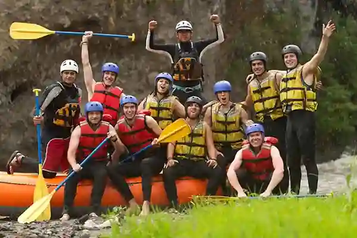

Le rafting sur la Rivère d’Émeraude n’est pas seulement une question d’adrénaline; c’est aussi une communion avec la nature. Au fil de la descente, vous croiserez peut-être des hérons grâcieux, des poissons sautant dans les remous, ou encore des cascades secrètes cachées parmi les rochers. C’est une expérience qui réveille les sens et reconnecte à l’essentiel.